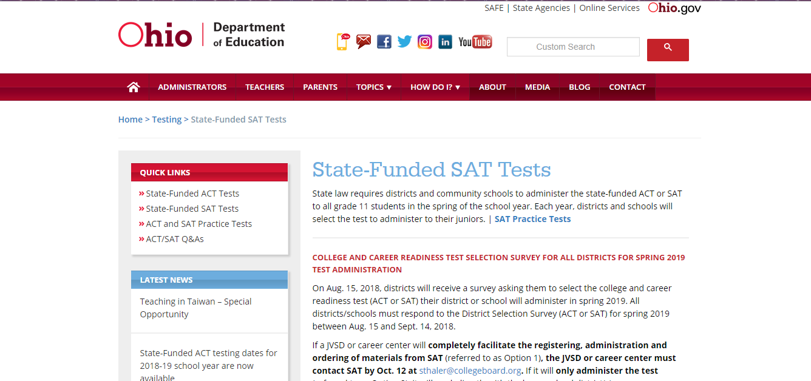
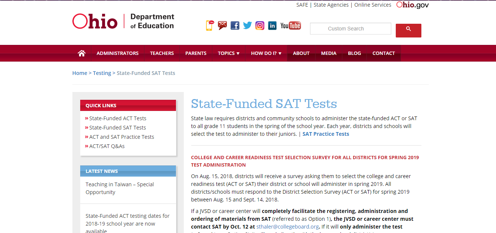

About Us
Since , Test Prep Pros have been helping local students put themselves in a position to be successful on college admissions tests such as the ACT and SAT.
With over 30 certified teachers on our staff covering virtually every discipline imaginable, we have the manpower to meet every learners unique needs.
Testing strategies as well as content specific assistance is offered by our tutors. We also have tutoring programs for middle and high school students in a variety of subjects.
Reach out to us at (937) 867-5309 or email us at testpreppros@tppros.com.
 
